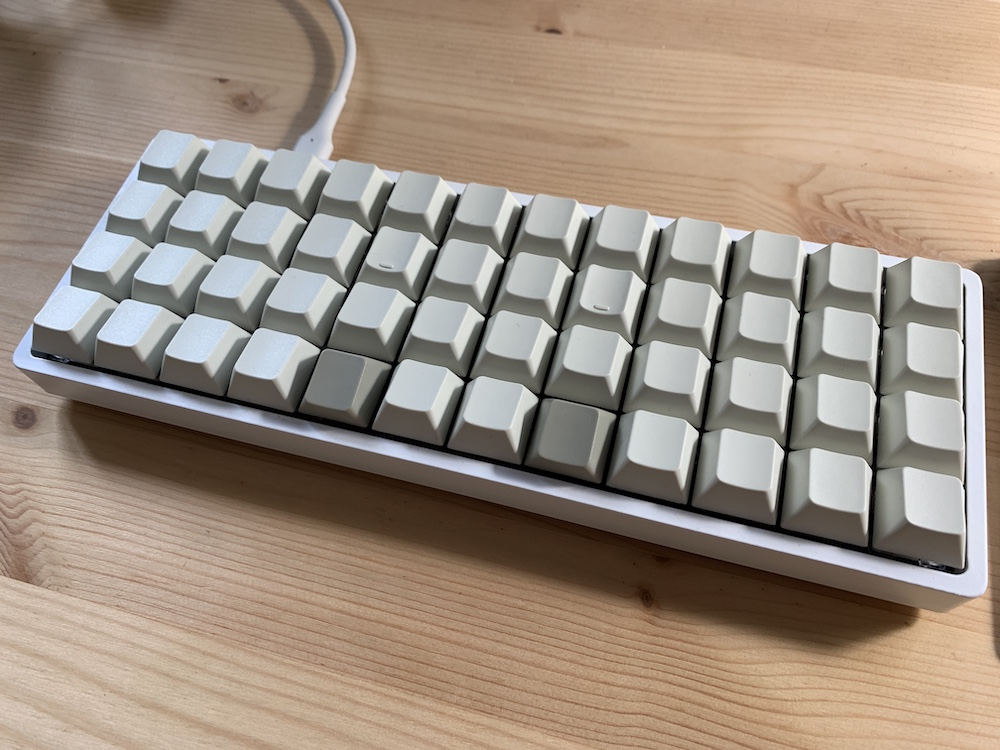

I use my computer a lot, and I mostly interact with it through text, so taking some time to think about my keyboard is certainly time well spent. For about three years now, I’ve been a devoted user of the Planck: a programmable grid of 48 single unit keys.

Apart from occasionally using the internal keyboard on my laptop I haven’t used another keyboard since making the switch, and am fully convinced that the Planck is an improvement on a conventional board in every way. Bear with me.
The core premise in the design of the Planck is that your fingers should never have to move more than one unit (or diagonal) away from the home position to hit any key (looking at you +, =, }, ]). This naturally gives us a 3 by 12 grid of keys for the 8 fingers to work with.
. . . . . . . . . . . .
. x x x x . . x x x x .
. . . . . . . . . . . .
The next key observation is that the thumbs can do a lot more than we normally task them with. The space bar is a huge waste of space, especially if our hands aren’t moving around as much as they would be on a full sized keyboard. In fact it’s no harder to hit a single unit space “bar” with the thumb than it is any other single unit key, so we can have a bottom row of another 12 one unit keys for the full compliment of 48 keys. This nicely fits all our alphas, all the usual modifiers, and then some.
. q w e r t y u i o p .
. a s d f g h j k l . .
. z x c v b n m . . . .
. . . . . . _ . . . . .
You’ll also notice that the keys on the Planck are arranged in a grid. This makes every movement away from the home row completely regular – it’s always the same distance, exactly up, down, left, or right. Conventional keyboards are staggered to imitate typewriters, where the stagger was a requirement to prevent the key levers from getting in the way of one another, but this comes at the cost of making certain keys harder to reach than others. Look how much harder it is to reach b than n – on a grid they are the same.
But what about numbers and symbols?! You could never program with so few keys.
To which I respond:
But what about capital letters? You could never write a full sentence with so few keys.
In much the same way as the shift keys allow us to use a single key to represent both a and A (the upper case “layer” if you like), we can introduce more modifiers to take us to a layer of symbols, movement keys, media keys, a macro pad. Better still, we can position these modifiers on our freed up bottom row, so that they can be held with a thumb. I would far rather depress a key under my thumb to access symbols on the home row than move my fingers two keys up to a number row and have to hit shift (and don’t get me started on moving your hand to the arrow cluster).
To illustrate, this is what the base layer on my keyboard currently looks like (I’m also a Colemak user, but that’s a story for another day…):
tab q w f p g j l u y ; -
bsp a r s t d h n e i o '
shi z x c v b k m , . / shi
fun ctr alt cmd sym ent spc mov cmd ctr alt fun
Depressing sym takes us to a layer of symbols and numbers:
esc 1 2 3 4 5 6 7 8 9 0 –
del ! @ # $ % ^ & * ( ) £
~ ` + = | \ [ ] { }
sym
And depressing mov takes us to a layer with movement keys (arrow cluster, home, end, page up/down, window management hotkeys).
I’m a full time software developer, so I type a lot of symbols, and whenever I have to use a conventional keyboard I’m frustrated by how much longer it takes to reach them. With thumb modifiers typing symbols and number is easier than typing upper case letters with shift. It would be a bold claim indeed to assert the same about the situation on a full sized keyboard.
The final trump card of the Planck is its programability. If you’re sold on the physical layout, then the wonderful QMK firmware can be endlessly customised. Here’s my keymap for reference, but QMK supports a whole host of advanced features that I’ve never touched.
This is a distillation of explanations that I give to colleagues and friends after they inevitably ask, “What is that thing on your desk?”, or a response to the common knee jerk reaction online that keyboards like the Planck are cute and interesting, but that you couldn’t possibly get any real work done with them. I don’t think this board is for everyone, but I hope if nothing else I’ve convinced you that time spent thinking about your keyboard can be just as valuable as time spent tinkering with your vim config.
Written on the 2nd of June 2019.